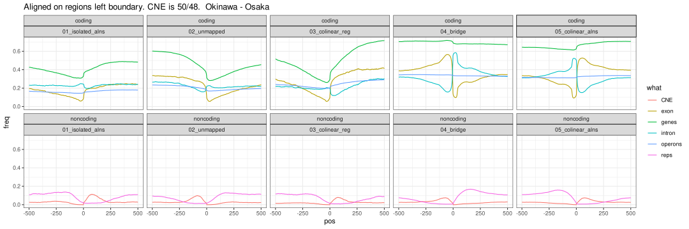
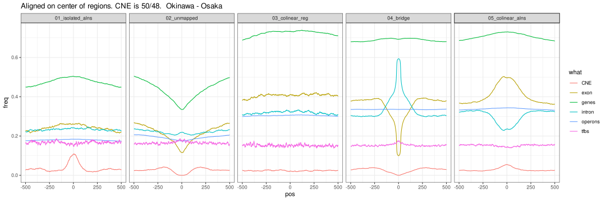
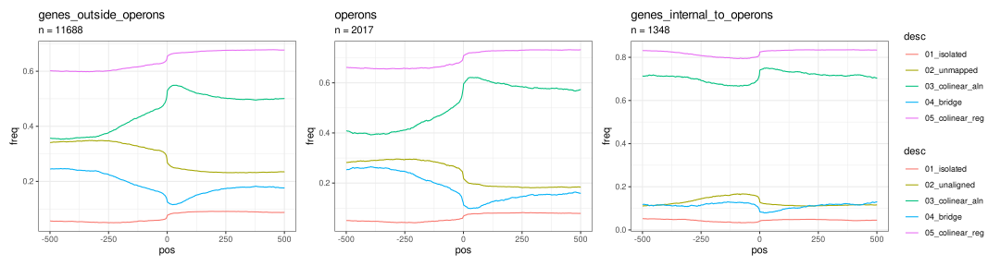

Genomic features of the breakpoints
Charlotte West
Charles Plessy
18 May, 2022
Source:vignettes/GenomicFeatures.Rmd
GenomicFeatures.RmdLoad packages and data
See ?OikScrambling:::loadAllGenomes, ?OikScrambling:::loadAllTranscriptsGR, and vignette("LoadGenomicBreaks", package = "OikScrambling") for how the different objects are prepared.
library('OikScrambling') |> suppressPackageStartupMessages()
library('GenomicFeatures') |> suppressPackageStartupMessages()
library('heatmaps') |> suppressPackageStartupMessages()
library('patchwork') |> suppressPackageStartupMessages()
genomes <- OikScrambling:::loadAllGenomes(compat = F)
# Cannot use Knitr cache as long as "annot" objects are used.
annots <- OikScrambling:::loadAllAnnotations() |> suppressWarnings()
reps <- OikScrambling:::loadAllRepeats(compat = F)
load("BreakPoints.Rdata")
requireNamespace("rGADEM") |> suppressPackageStartupMessages()
requireNamespace("ggseqlogo") |> suppressPackageStartupMessages()
ces <- readRDS("CEs.Rds")
tfbs <- readRDS("pwmMatchesOki_12_95.Rds")Nucleic acid content heatmaps
The GenomicBreaks::bp_heatmap() function plots nucleic acid content in windows centered on alignment stops.
GC
Lets look at GC content before and after coalescing:
maxHeight <- 2000
sm_GC2 <- sapply(coa[1:15], bp_heatmap, win = 1000, pat = "GC", direction = "left") |>
sapply(smoothHeatmap, output.size = c(maxHeight, 500), algorithm = "kernel") |> SimpleList()
plotHeatmapList(sm_GC2[1:5])
The alignment stops are ordered in such a way that start (or left breaks) are centred on the top half of the plot, and end alignment stops are centred on the bottom. This is why we see different directionality in the plots. At the alignment stops, the GC content seems to be lower, but higher once within the aligned region, except for the Oki – Kum pair.
TATA
Now looking at TATA content:
maxHeight <- 2000
sm_GC2_TATA <- sapply(coa[1:15], bp_heatmap, window = 1000, pat = "TATA", direction = "left") |>
sapply(smoothHeatmap, output.size = c(maxHeight, 500), algorithm = "kernel") |> SimpleList()
plotHeatmapList(sm_GC2_TATA[1:5])
The directionaility here is consistent with the GC content analysis. Furthermore; “TATA box sequence can act as a basal promoter element not only for RNA polymerase II (RNAP II) transcription, but also for transcription by RNA polymerase III (RNAP III)” - Wang Y, Jensen RC, Stumph WE. Role of TATA box sequence and orientation in determining RNA polymerase II/III transcription specificity. Nucleic Acids Res. 1996;24(15):3100–3106. doi:10.1093/nar/24.15.3100. However, the areas are not particularly enriched for TATA boxes, so it does not necessarily show that breakpoints are occurring directly after promoter regions.
maxHeight <- 2000
sm_GC2_mot <- sapply(coa[1:15], bp_heatmap, window = 1000, pat = "AGCNGC", direction = "left") |>
sapply(smoothHeatmap, output.size = c(maxHeight, 500), algorithm = "kernel") |> SimpleList()
plotHeatmapList(sm_GC2_mot[1:5])
Cluster analysis
# # Accessory functions
# clusterHeatmap <- function(hm, k = 2) kmeans(image(hm), k)
#
# orderHeatmap <- function(hm, cl) {
# image(hm) <- image(hm)[order(cl$cluster),]
# hm
# }
#
# subsetHeatmap <- function(hm, bool) {
# image(hm) <- image(hm)[bool,]
# hm
# }
#
# # DAta
# hm_GC <- bp_heatmap( gr_Oki_O, basep_range = 1000, pat = "GC", direction = "left")
# hm_TATA <- bp_heatmap( gr_Oki_O, basep_range = 1000, pat = "TATA", direction = "left")
# hm_tan <- feature_coverage(gr_Oki_O, tan_Oki, win = 1000, lab = "Tandem", direction = "left")
#
# # Define 3 K-mean clusters
# clusterHeatmap(hm_GC, 3) -> hm_cl_k4
#
# # Order and smooth
# shm_GC <- orderHeatmap(hm_GC, hm_cl_k4) %>%
# smoothHeatmap(output.size = c(2000,500), algorithm = "kernel")
#
# shm_TATA <- orderHeatmap(hm_TATA, hm_cl_k4) %>%
# smoothHeatmap(output.size = c(2000,500), algorithm = "kernel")
#
# shm_tan <- orderHeatmap(hm_tan, hm_cl_k4) %>%
# smoothHeatmap(output.size = c(2000,500), algorithm = "kernel")
#
# # Plot the ordered data
# plotHeatmapList(list(shm_GC, shm_TATA, shm_tan))
# par(mfrow = c(1,1)) # plotHeatmapList messes with mrfrow...
# plotHeatmapMeta(list(hm_GC, hm_TATA, hm_tan))
#
# plotHeatmapMeta(list(subsetHeatmap(hm_GC, hm_cl_k4$cluster == 1),
# subsetHeatmap(hm_GC, hm_cl_k4$cluster == 2),
# subsetHeatmap(hm_GC, hm_cl_k4$cluster == 3)))
#
# kmeanOrderedPlot <- function (hm, k=3, seed = 1) {
# set.seed(seed)
#
# cl <- kmeans(image(hm), k)
# mat <- image(hm)[order(cl$cluster),]
#
# kmhm = Heatmap(
# mat,
# coords=c(-500,500),
# label="kmeans",
# scale=range(mat))
#
# plotHeatmapList(kmhm,
# cex.label=1.5,
# partition=as.vector(table(cl$cluster)),
# partition.legend=TRUE,
# partition.lines=TRUE,
# legend=TRUE,
# legend.pos="r",
# legend.width=0.3)
# }
#
# kmeanOrderedPlot(shm_GC)Evidence for breakpoint hotspots
The function ?GenomicBreaks::bp_pair_analysis takes two pairwise alignments with the same target genome, and plots the alignment stops on to the centred alignment stops of the other.
In the plot below, Osaka is there consistent target genome, and as such acts as a coordinate system to relate alignment stops across genomes. Lets produce two of these 3-way analyses; one between Osaka-Okinawa-Norway, and one between Osaka-Okinawa-Aomori.
bp_pair_analysis(gbs$Osa_Oki, gbs$Osa_Nor, win = 1000, lab = "Oki~Nor") |> plotHeatmapMeta()
bp_pair_analysis(gbs$Osa_Oki, gbs$Osa_Aom, win = 1000, lab = "Oki~Aom") |> plotHeatmapMeta()
The accumulation of alignment breaks of one pairwise alignment onto another suggests the existence of breakpoint hotspots; regions where breaks are far more likely to occur. Intuitively, this would lead to the presumption of synteny blocks, also. The pattern is consistent after coalescing, too;
bp_pair_analysis(coa$Osa_Oki, coa$Osa_Nor, win = 1000, lab = "Oki~Nor") |> plotHeatmapMeta()
bp_pair_analysis(coa$Osa_Oki, coa$Osa_Aom, win = 1000, lab = "Oki~Aom") |> plotHeatmapMeta()
Gene feature coverage around aligned and unaligned genomic regions.
Model operon areas
Notes about operons
The operon of Ganot et al., 2004 appears to be conserved in OKI and OSA. In the annotation visible in ZENBU and NCBI:
- Centrosomal protein POC5 is in the second half
Oidioi.mRNA.OKI2018_I69.PAR.g12978, downstream of a CAGE TSS promoter. (Not reported in Ganot et al., 2004) - IQ domain-containing protein K isoform X2 is
Oidioi.mRNA.OKI2018_I69.PAR.g12977(Not reported in Ganot et al., 2004). - Ran binding protein 16 is
Oidioi.mRNA.OKI2018_I69.PAR.g12976. (First member of the operon of Ganot et al., 2004). - Dynein light chain is
Oidioi.mRNA.OKI2018_I69.PAR.g12975. - Delta tubulin is
Oidioi.mRNA.OKI2018_I69.PAR.g12974. - MBF is
Oidioi.mRNA.OKI2018_I69.PAR.g12973. - CycD is
Oidioi.mRNA.OKI2018_I69.PAR.g12972. Polyadenylation signal conserved.
(Note that the transcripts IDs here differ from the public ones.)
Ganot et al., 2004 reported very small (<30) intercistronic regions and Denoeud et al., 2010 stated: “The operons were predicted as co-oriented genes separated by 60 nucleotides at most : 1761 operons containing 4997 genes were predicted on the reference assembly”. However, in our annotation, we do not have the UTRs, but only the distances between translation stops and starts, so we need a broader window. The example below shows that a window of 400 would break the Ganot 2004 operon, so let’s use 500 instead.
transcripts(annots$Oki) |> subsetByOverlaps(GRanges("PAR:15956430-15967745"))## GRanges object with 8 ranges and 2 metadata columns:
## seqnames ranges strand | tx_id tx_name
## <Rle> <IRanges> <Rle> | <integer> <character>
## [1] PAR 15956464-15957432 - | 14303 g12997.t1
## [2] PAR 15957795-15958315 - | 14304 g12998.t1
## [3] PAR 15958381-15959726 - | 14305 g12999.t1
## [4] PAR 15959875-15960185 - | 14306 g13000.t1
## [5] PAR 15960589-15964701 - | 14307 g13001.t1
## [6] PAR 15960653-15964701 - | 14308 g13001.t2
## [7] PAR 15964824-15965481 - | 14309 g13002.t1
## [8] PAR 15965608-15967583 - | 14310 g13003.t1
## -------
## seqinfo: 19 sequences from OKI2018.I69 genome
transcripts(annots$Oki) |> subsetByOverlaps(GRanges("PAR:15956430-15967745")) |> cleanGaps() |> width()## [1] 362 65 148 403 122 126Compute operons
operons <- lapply(annots, \(a) {a |> genes() |> OikScrambling:::calcOperons(window = 500) }) |> SimpleList() |> suppressWarnings()
operons$Nor <- OikScrambling:::calcOperons(window = 500, transcripts(annots$Nor) |> reduce()) |> suppressWarnings()
sapply(operons, length)## Oki Osa Bar Kum Aom Nor Ply Ros
## 2017 1736 1745 1693 1424 1844 491 726## $Oki
##
## 2 3 4 5 6 7 8 9 10 11
## 1281 420 169 69 34 21 10 5 5 3
##
## $Osa
##
## 2 3 4 5 6 7 8 9 10 11 12 13
## 1079 364 153 71 37 15 7 5 1 2 1 1
##
## $Bar
##
## 2 3 4 5 6 7 8 9 12 17
## 1074 346 165 76 36 22 17 7 1 1
##
## $Kum
##
## 2 3 4 5 6 7 8 9 10 11 14 17
## 1071 359 125 73 32 16 5 2 4 3 2 1
##
## $Aom
##
## 2 3 4 5 6 7 8 9 10 11
## 923 254 123 57 28 22 8 5 2 2
##
## $Nor
##
## 2 3 4 5 6 7 8 9 10 11 12 13 14 15 16 17
## 1078 332 166 83 51 37 22 25 10 15 7 8 3 3 1 1
## 22
## 2
##
## $Ply
##
## 2 3 4 5 6 14 15
## 419 56 11 1 2 1 1
##
## $Ros
##
## 2 3 4 5 6 9 26 28
## 635 68 17 2 1 1 1 1With the OdB3 genome, the results are apparently close to those of Denoeud et al., 2010 (see above for why the difference). We have a few more (1844 instead of 1761), they contain more genes (5814 instead of 4997), mostly because our computation outputs 50 operons longer than 9 genes (617 genes in total). Nevertheless, the proportion of operons of length 2, 3 and 4 are visually similar in both cases.
Accessory functions
prepareFreqPlot <- function(gb, annot = NULL, rep = NULL, cne = NULL, tfbs = NULL, operons = NULL, win = 1000, direction = "left", withGenes=c("yes", "no", "only")) {
withGenes <- match.arg(withGenes)
l <- list()
# Note that get_bps(direction="mid") is probably not what you think.
if(direction == "mid") {
gb <- resize(gb, 1, "center")
direction <- "left"
}
if (!is.null(annot)) {
if (withGenes %in% c("yes", "only")) {
l$genes <- feature_coverage(gb, genes(annot), win = win, lab = "genes", direction = direction)
}
if (withGenes %in% c("yes", "no")) {
l$intron <- feature_coverage(gb, intronicParts(annot), win = win, lab = "intron", direction = direction)
l$exon <- feature_coverage(gb, exonicParts(annot), win = win, lab = "exon", direction = direction)
#reorder
newOrder <- order(rowSums(l$intron@image))
l$intron@image <- l$intron@image[newOrder,]
l$exon@image <- l$exon@image[newOrder,]
}
}
if (!is.null(operons))
l$operons<-feature_coverage(gb, operons, win = win, lab = "operons",direction = direction)
if (!is.null(rep))
l$reps <- feature_coverage(gb, rep, win = win, lab = "repeats",direction = direction)
if (!is.null(cne))
l$CNE <- feature_coverage(gb, cne, win = win, lab = "CNE", direction = direction)
if (!is.null(tfbs))
l$tfbs <- feature_coverage(gb, tfbs, win = win, lab = "TFBS", direction = direction)
l
}
#' Prepare a long tibble for frequency plotting
#'
#' Loop over a list of `Heatmap` objects to produce a long tibble that can be
#' used with ggplot to plot frequency of each feature included in the list.
#'
#' @param x A list of `Heatmap` objects
#' @param desc An additional description (character string)
#'
#' @return A long `tibble` that is the vertical concatenation of all tibbles
#' produced for each element of the list `x`. Its `what` column is made from
#' the names of the heatmaps in the list, and its `desc` column is made from the
#' `desc` arguments. The other columns (`val`, `freq` and `pos`) originate from
#' the `Heatmap_to_freq_tibble` function call.
prepareGGFreqPlot <- function(x, desc = NULL) {
l <- lapply(names(x), \(name){
tib <- Heatmap_to_freq_tibble(x[[name]], desc = desc)
tib$what <- name
tib
})
do.call(rbind, l)
}
#' Heatmap to long tibble for ggplot
#'
#' Coerce a Heatmap object into a \dQuote{long} tibble with one value per
#' position, either as raw counts or as a frequency.
#'
#' The tibble can then be passed to ggplot. The `image` matrix of the `Heatmap`
#' object has one column per nucleotide position and it is assumed that its
#' central column is for position zero.
#'
#' @param h a `Heatmap` object
#'
#' @return a `tibble` with `val`, `freq` and `pos` columns
Heatmap_to_freq_tibble <- function(h, desc = NULL) {
val <- colSums(h@image)
tibble::tibble( val = val
, freq = val / nrow(h@image)
, pos = 1:ncol(h@image) - round(ncol(h@image)) / 2
, desc = desc)
}Centering on left-aligned boundaries.
Breakpoints are between mapped regions. If the unmapped region is broad we have little information where the breakpoint originally was. We set arbitrarly the breakpoints to the left-side (end-side) coordinate of genomic regions.
Mapped regions can consist of multiple colinear aligned regions, or be a single uncoalesced aligned region. We will see that they have different properties.
Our annotations is mostly made of coding exons, so the features exons and cds have very similar profiles. Therefore we keep only exons in the rest of the analysis.
Positive coordinates (and zero) start in selected regions and negative coordinates start outside these regions. As we move further from 0, we can not guarantee that the statement is still true because some regions have a width narrower than the plot window. This is why the values tend to equilibrate away from the boundaries.
Aligned regions are enriched in exons and depleted in introns.
Close to the breakpoint of uncoalesced mapped regions, exon annotations are depleted, which makes sense, as exons are usually mapable. Within the mapped regions, frequency of introns and exons are comparable. In contrary, within coalesced mapped regions, the exon annotations are over-represented.
#' Pre-compute feature frequencies in fixed windows
#'
#' @param target 3-letter name of one Oik genome
#' @param query 3-letter name of another Oik genome
#' @param perpareFreqPlot a `perpareFreqPlot` function
#' @param reps `SimpleList` of `GRanges` of repeat regions
#' @param CE `SimpleList` of `GRanges` with conserved non-coding elements
#' @param tfbs `SimpleList` of `GRanges` of putative transcription factor binding sites
#' @param operons `SimpleList` of `GRanges` of operon regions.
#' @param direction Where to center the windows (`left`, `right` or `mid`)
#'
#' @return A `SimpleList` of Heatmap objects
computePlotData <- function(target, query, annots=NULL, reps=NULL, CE=NULL, tfbs=NULL, operons=NULL, direction="left") {
pair <- paste(target, query, sep = "_")
current_GB_aln_nonCoa <- gbs[[pair]][ gbs[[pair]]$nonCoa]
current_GB_aln_coa <- gbs[[pair]][ ! gbs[[pair]]$nonCoa]
current_GB_syn_block <- coa[[pair]][ ! coa[[pair]]$nonCoa]
# We do not use unal, because it overlaps with bri
current_GB_unmap <- unmap[[pair]]
current_GB_bri <- bri[[pair]]
targetGenome <- unique(genome(gbs[[pair]]))
prepareFreqPlot_default <- \(x) prepareFreqPlot(x, annot = annots[[target]], rep = reps[[targetGenome]], cne = CE[[pair]], tfbs = tfbs, operons = operons[[target]], direction = direction)
hmList <- SimpleList()
hmList$aln_nonCoa <- prepareFreqPlot_default(current_GB_aln_nonCoa)
hmList$aln_coa <- prepareFreqPlot_default(current_GB_aln_coa)
hmList$syn_block <- prepareFreqPlot_default(current_GB_syn_block)
hmList$unmap <- prepareFreqPlot_default(current_GB_unmap)
hmList$bri <- prepareFreqPlot_default(current_GB_bri)
hmList
}
hmList_to_plot_noncoding <- computePlotData("Oki", "Osa", reps = reps, CE = ces$ce__50__48)
hmList_to_plot_coding <- computePlotData("Oki", "Osa", annots = annots, operons = operons)
list_of_heatmaps_to_long_tibble <- function(hmList_to_plot, desc = NULL) {
tib <-rbind(
hmList_to_plot$aln_nonCoa |> prepareGGFreqPlot("01_isolated_alns"),
hmList_to_plot$unmap |> prepareGGFreqPlot("02_unmapped"),
hmList_to_plot$syn_block |> prepareGGFreqPlot("03_colinear_reg"),
hmList_to_plot$bri |> prepareGGFreqPlot("04_bridge"),
hmList_to_plot$aln_coa |> prepareGGFreqPlot("05_colinear_alns")
)
tib$desc2 <- desc
tib
}
rbind(
list_of_heatmaps_to_long_tibble(hmList_to_plot_noncoding, "noncoding"),
list_of_heatmaps_to_long_tibble(hmList_to_plot_coding, "coding")
) |> ggplot() +
aes(pos, freq, col = what) +
geom_line() +
facet_wrap(~desc2 + desc, nrow = 2) +
theme_bw() +
ggtitle("Aligned on regions left boundary. CNE is 50/48. Okinawa - Osaka")
Most of the narrow-width aligned regions did not coalesce. We use this as a classifier instead of an arbitrary width cutoff. See vignette("RegionWidths", package = "OikScrambling") for details.
Simplified version
With only 2 panels, for unmapped–aligned and bridge–aligned, we display almost all the information present in the 5-panel version above.
computePlotData_simplified <- function(target, query, annots=NULL, reps=NULL, CE=NULL, tfbs=NULL, operons=NULL, direction="left", withGenes = c("yes", "no", "only")) {
withGenes <- match.arg(withGenes)
pair <- paste(target, query, sep = "_")
current_GB_brk <- unmap[[pair]] |> subsetByOverlaps(coa[[pair]][!coa[[pair]]$nonCoa] + 1) # The unmapped region flanking colinear regions
current_GB_bri <- bri[[pair]]
targetGenome <- unique(genome(gbs[[pair]]))
prepareFreqPlot_default <- \(x) prepareFreqPlot(x, annot = annots[[target]], rep = reps[[targetGenome]], cne = CE[[pair]], tfbs = tfbs, operons = operons[[target]], direction = direction, withGenes = withGenes)
hmList <- SimpleList()
hmList$brk <- prepareFreqPlot_default(current_GB_brk)
hmList$bri <- prepareFreqPlot_default(current_GB_bri)
hmList
}
hmList_to_plot_noncoding <- computePlotData_simplified("Oki", "Osa", reps = reps, CE = ces$ce__50__48, direction = "right")
hmList_to_plot_genesoperons <- computePlotData_simplified("Oki", "Osa", annots = annots, operons = operons, direction = "right", withGenes = "only")
hmList_to_plot_exonintron <- computePlotData_simplified("Oki", "Osa", annots = annots, direction = "right", withGenes = "no")
list_of_heatmaps_to_long_tibble <- function(hmList_to_plot, desc = NULL) {
tib <-rbind(
hmList_to_plot$brk |> prepareGGFreqPlot("01_break"),
hmList_to_plot$bri |> prepareGGFreqPlot("02_bridge")
)
tib$desc2 <- desc
tib
}
rbind(
list_of_heatmaps_to_long_tibble(hmList_to_plot_noncoding, "noncoding"),
list_of_heatmaps_to_long_tibble(hmList_to_plot_genesoperons, "genes and operons"),
list_of_heatmaps_to_long_tibble(hmList_to_plot_exonintron, "exons and introns")
) |> ggplot() +
aes(pos, freq, col = what) +
geom_line() +
facet_wrap(~desc2 + desc, nrow = 3) +
theme_bw() +
ggtitle("Aligned on regions left boundary. CNE is 50/48. Okinawa - Osaka")Bridge regions classified by width.
Short bridge regions contain small introns. Long bridge regions contain repeats, which may be in introns.
computePlotData_for_bridge <- function(target, query, annots=NULL, reps=NULL, CE=NULL, tfbs=NULL, operons=NULL, direction="left") {
pair <- paste(target, query, sep = "_")
current_GB_bri <- bri[[pair]]
current_GB_bri_small <- current_GB_bri[width(current_GB_bri) < 150]
current_GB_bri_long <- current_GB_bri[width(current_GB_bri) >= 150]
targetGenome <- unique(genome(gbs[[pair]]))
prepareFreqPlot_default <- \(x) prepareFreqPlot(x, annot = annots[[target]], rep = reps[[targetGenome]], cne = CE[[pair]], tfbs = tfbs, operons = operons[[target]], direction = direction)
hmList <- SimpleList()
hmList$bri <- prepareFreqPlot_default(current_GB_bri)
hmList$bri_small <- prepareFreqPlot_default(current_GB_bri_small)
hmList$bri_long <- prepareFreqPlot_default(current_GB_bri_long)
hmList
}
hmList_to_plot_noncoding <- computePlotData_for_bridge("Oki", "Osa", reps = reps, CE = ces$ce__50__48)
hmList_to_plot_coding <- computePlotData_for_bridge("Oki", "Osa", annots = annots, operons = operons)
list_of_heatmaps_to_long_tibble <- function(hmList_to_plot, desc = NULL) {
tib <-rbind(
hmList_to_plot$bri |> prepareGGFreqPlot("01_bridge"),
hmList_to_plot$bri_small |> prepareGGFreqPlot("02_bridge_small"),
hmList_to_plot$bri_long |> prepareGGFreqPlot("02_bridge_long")
)
tib$desc2 <- desc
tib
}
rbind(
list_of_heatmaps_to_long_tibble(hmList_to_plot_noncoding, "noncoding"),
list_of_heatmaps_to_long_tibble(hmList_to_plot_coding, "coding")
) |> ggplot() +
aes(pos, freq, col = what) +
geom_line() +
facet_wrap(~desc2 + desc, nrow = 2) +
theme_bw() +
ggtitle("Aligned on regions left boundary. CNE is 50/48. Okinawa - Osaka")Aligning on center instead of border.
hmList_to_plot.centered <- computePlotData("Oki", "Osa", annots = annots, CE = ces$ce__50__48, tfbs = tfbs, operons = operons, direction = "mid")
(p_boundary <- rbind(
hmList_to_plot.centered$aln_nonCoa |> prepareGGFreqPlot("01_isolated_alns"),
hmList_to_plot.centered$unmap |> prepareGGFreqPlot("02_unmapped"),
hmList_to_plot.centered$syn_block |> prepareGGFreqPlot("03_colinear_reg"),
hmList_to_plot.centered$bri |> prepareGGFreqPlot("04_bridge"),
hmList_to_plot.centered$aln_coa |> prepareGGFreqPlot("05_colinear_alns")
)|> ggplot() +
aes(pos, freq, col = what) +
geom_line() +
facet_wrap(~desc, nrow = 1) +
theme_bw() +
ggtitle("Aligned on center of regions. CNE is 50/48. Okinawa - Osaka"))
Splice junctions
rbind(
feature_coverage(gbs$Oki_Osa[gbs$Oki_Osa$nonCoa], intronicParts(annots$Oki) |> resize(1), window = 1000, lab = "splicejunctions", dir = "left") |>
Heatmap_to_freq_tibble("01_isolated"),
feature_coverage(unal$Oki_Osa[unal$Oki_Osa$nonCoa], intronicParts(annots$Oki) |> resize(1), window = 1000, lab = "splicejunctions", dir = "left") |>
Heatmap_to_freq_tibble("02_unaligned"),
feature_coverage(coa$Oki_Osa[!coa$Oki_Osa$nonCoa], intronicParts(annots$Oki) |> resize(1), window = 1000, lab = "splicejunctions", dir = "left") |>
Heatmap_to_freq_tibble("03_colinear_reg"),
feature_coverage(bri$Oki_Osa, intronicParts(annots$Oki) |> resize(1), window = 1000, lab = "splicejunctions", dir = "left") |>
Heatmap_to_freq_tibble("04_bridge")
) |> ggplot() + aes(pos, freq, col = desc) + geom_line()PWM
The PWM motif, which is rare in comparison to the other features, follows a profile that bears resemblance to the repeat profile.
gadems.invLeftGap <- readRDS("gadems.invLeftGap.Rda")
pwm <- gadems.invLeftGap$Oki_Osa[[1]]
pwm@consensus## [1] "rArAAGCCGCdwAGCsGCw"
# pwmHits <- matchPWM(pwm = sapply(pwm@alignList, \(x) x@seq) |> as("DNAStringSet") |> PWM(), genomes$Oki) # Gives different scores...
pwmHits <- matchPWM(pwm = rGADEM::getPWM(pwm), genomes$OKI2018.I69) |> suppressWarnings()
# Suppressing warnings like:
# Warning messages:
# 1: In .Call2("XString_match_PWM", pwm, subject, min.score, count.only, :
# 'subject' contains letters not in [ACGT] ==> assigned weight 0 to them
#
# plotHeatmapMeta(list(feature_coverage(current_GB_wide, pwmHits, win = 1e3, lab = "wide", direction = "left")))
# plotHeatmapMeta(list(feature_coverage(current_GB_narrow, pwmHits, win = 1e3, lab = "narrow", direction = "left")))Question
in vignette("ColinearityInterruptors", package = "OikScrambling"), we saw that some uncoalesced regions map uniquely and are well conserved across genomes. What are they… enhancers ?
Gene feature coverage around PWM hits
Let’s look at coverage around PWM hits of the AAGCsGCwwmkCGrCTTyn motif
current_GB <- pwmHits
hmList_PWM_OKI <- list()
hmList_PWM_OKI$genes <- feature_coverage(current_GB, genes(annots$Oki), win = 2000, lab = "Oki genes", direction = "left")
hmList_PWM_OKI$promoters <- feature_coverage(current_GB, promoters(annots$Oki), win = 2000, lab = "Oki promoters", direction = "left")## Warning in valid.GenomicRanges.seqinfo(x, suggest.trim = TRUE): GRanges object contains 4 out-of-bound ranges located on sequences
## chr1, chrUn_1, and chrUn_10. Note that ranges located on a sequence
## whose length is unknown (NA) or on a circular sequence are not
## considered out-of-bound (use seqlengths() and isCircular() to get the
## lengths and circularity flags of the underlying sequences). You can use
## trim() to trim these ranges. See ?`trim,GenomicRanges-method` for more
## information.
hmList_PWM_OKI$exons <- feature_coverage(current_GB, exonicParts(annots$Oki), win = 2000, lab = "Oki exons", direction = "left")
hmList_PWM_OKI$introns <- feature_coverage(current_GB, intronicParts(annots$Oki), win = 2000, lab = "Oki introns", direction = "left")
hmList_PWM_OKI$cds <- feature_coverage(current_GB, cds(annots$Oki), win = 2000, lab = "Oki cds", direction = "left")
plotHeatmapMeta(hmList_PWM_OKI[c("genes", "exons", "cds")]) # Show they look alike. We keep "exons"
plotHeatmapMeta(hmList_PWM_OKI[c("promoters", "exons", "introns")])
They are enriched in introns…
#
# # Sandbox to make sanity checks.
#
# a <- coa$Oki_Osa
# b <- unlist(fiveUTRsByTranscript(annots$Oki))
#
# hm_a <- feature_coverage(a, b, win = 2000, lab = "All ranges", direction = "left")
# hm_b <- feature_coverage(subsetByOverlaps(a, b), b, win = 2000, lab = "Subsetted ranges", direction = "left")
#
# plotHeatmapMeta(list(hm_a))
# plotHeatmapMeta(list(hm_b))Breakpoint coverage around PWM hits
TODO: triplecheck feature_coverage, it is old…
current_GB <- pwmHits
hmList_PWM_OKI$gbOsa <- feature_coverage(current_GB, gbs$Oki_Osa, win = 5000, lab = "Oki-Osa", direction = "left")
hmList_PWM_OKI$gbBar <- feature_coverage(current_GB, gbs$Oki_Bar, win = 5000, lab = "Oki-Bar", direction = "left")
hmList_PWM_OKI$gbKum <- feature_coverage(current_GB, gbs$Oki_Kum, win = 5000, lab = "Oki-Kum", direction = "left")
plotHeatmapMeta(hmList_PWM_OKI[c("gbOsa", "gbBar", "gbKum")])
hmList_PWM_OKI$coOsa <- feature_coverage(current_GB, coa$Oki_Osa, win = 5000, lab = "Oki-Osa", direction = "left")
hmList_PWM_OKI$coBar <- feature_coverage(current_GB, coa$Oki_Bar, win = 5000, lab = "Oki-Bar", direction = "left")
hmList_PWM_OKI$coKum <- feature_coverage(current_GB, coa$Oki_Kum, win = 5000, lab = "Oki-Kum", direction = "left")
plotHeatmapMeta(hmList_PWM_OKI[c("coOsa", "coBar", "coKum")])Okinawa genome coverage
As previously discussed, low coverage over an alignment stop could lower the likelihood of it being considered as a breakpoint. We have per-base coverage depth information for the Okinawan genome (Oki_cov_pb). However, the coverage of this particular assembly is quite good. In fact, we can investigate the coverge over alignment stops from the information obtained using master_bp_analysis.
# fin_Oki <- fin_gr_O_Oki[[2]]
# min_cov <- min(min(fin_Oki$left_cov_pb), min(fin_Oki$right_cov_pb)) # minimum coverage over an alignment stop
# min_cov
# length(fin_Oki[fin_Oki$left_cov_pb == min_cov]) + length(fin_Oki[fin_Oki$right_cov_pb == min_cov]) # how many of the minimum coverage is observed
# length(fin_Oki[fin_Oki$left_cov_pb <= 50]) + length(fin_Oki[fin_Oki$right_cov_pb <= 50]) # how many alignment stops have a coverage of less than or euqal to 50We may choose to kick out the one alignment stop for which there is no coverage. However, only 15 out of 34572 alignment stops have a coverage of less than or equal to 50, meaning that it would be hard to exclude more than just a few alignment stops using coverage information for breakpoint analysis.
Operons and genes
Do alignments often cross gene or operon boundaries ?
Operons boundaries
Operon boundaries tend to coincide with alignment boundaries and the largest shift in frequency is for colinear alignments. Baseline frequency of colinear regions is higher than 0.6 on both side of operon boundaries.
feature_coverage_on_operons <- {
function(feat, desc)
feature_coverage(operons$Oki, feat, window = 1000, lab = "", dir = "left") |> Heatmap_to_freq_tibble(desc)
}
pairname <- "Oki_Bar"
pairname <- "Oki_Osa"
p_op_scrambling <- rbind(
feature_coverage_on_operons(gbs[[pairname]][gbs[[pairname]]$nonCoa], "01_isolated"),
feature_coverage_on_operons(unal[[pairname]][unal[[pairname]]$nonCoa], "02_unaligned"),
feature_coverage_on_operons(gbs[[pairname]][!gbs[[pairname]]$nonCoa], "03_colinear_aln"),
#feature_coverage_on_operons(subsetByOverlaps(gbs$Oki_Osa[!gbs$Oki_Osa$nonCoa], granges(coa$Oki_Osa[!coa$Oki_Osa$nonCoa] - 1),type = "within"), "03b_colinear_aln_intern"),
#feature_coverage_on_operons(subsetByOverlaps(gbs$Oki_Osa[!gbs$Oki_Osa$nonCoa], unal$Oki_Osa[unal$Oki_Osa$nonCoa] + 1), "03c_colinear_aln_extern"),
feature_coverage_on_operons(bri[[pairname]], "04_bridge"),
feature_coverage_on_operons(coa[[pairname]][!coa[[pairname]]$nonCoa], "05_colinear_reg")
) |> ggplot() + aes(pos, freq, col = desc) + geom_line() + ggtitle("operons", subtitle = "n = 2017") + theme_bw()Gene boundaries inside operons
# Shrinking operons of 1 base and requesting full overlap
# in order to exclude the genes at the boundaries.
genes_inside_operons <- subsetByOverlaps(genes(annots$Oki), operons$Oki -1, type = "within")
genes_outside_operons <- subsetByOverlaps(genes(annots$Oki), cleanGaps(operons$Oki), type = "within")
feature_coverage_on_genes <- {
function(feat, desc)
feature_coverage(genes_inside_operons, feat, window = 1000, lab = "", dir = "left") |> Heatmap_to_freq_tibble(desc)
}
p_gene_int_scrambling <- rbind(
feature_coverage_on_genes(gbs$Oki_Osa[gbs$Oki_Osa$nonCoa], "01_isolated"),
feature_coverage_on_genes(unal$Oki_Osa[unal$Oki_Osa$nonCoa], "02_unmapped"),
feature_coverage_on_genes(gbs$Oki_Osa[!gbs$Oki_Osa$nonCoa], "03_colinear_aln"),
feature_coverage_on_genes(bri$Oki_Osa, "04_bridge"),
feature_coverage_on_genes(coa$Oki_Osa[!coa$Oki_Osa$nonCoa], "05_colinear_reg")
) |> ggplot() + aes(pos, freq, col = desc) + geom_line() + ggtitle("genes_internal_to_operons", subtitle = "n = 1348") + theme_bw()
feature_coverage_on_genes_outside <- {
function(feat, desc)
feature_coverage(genes_outside_operons, feat, window = 1000, lab = "", dir = "left") |> Heatmap_to_freq_tibble(desc)
}
p_gene_ext_scrambling <- rbind(
feature_coverage_on_genes_outside(gbs$Oki_Osa[gbs$Oki_Osa$nonCoa], "01_isolated"),
feature_coverage_on_genes_outside(unal$Oki_Osa[unal$Oki_Osa$nonCoa], "02_unmapped"),
feature_coverage_on_genes_outside(gbs$Oki_Osa[!gbs$Oki_Osa$nonCoa], "03_colinear_aln"),
feature_coverage_on_genes_outside(bri$Oki_Osa, "04_bridge"),
feature_coverage_on_genes_outside(coa$Oki_Osa[!coa$Oki_Osa$nonCoa], "05_colinear_reg")
) |> ggplot() + aes(pos, freq, col = desc) + geom_line() + ggtitle("genes_outside_operons", subtitle = "n = 11688") + theme_bw()Summary plot
p_gene_ext_scrambling + p_op_scrambling + p_gene_int_scrambling + plot_layout(nrow = 1, guides = 'collect')
Operon conservation
# Distribution of operon lengths
operons$Oki$n |> table()##
## 2 3 4 5 6 7 8 9 10 11
## 1281 420 169 69 34 21 10 5 5 3
# An operon is scrambled if it overlaps with an unaligned noncoalesced (= unmapped) region
scrambled_operons <- subsetByOverlaps(operons$Oki, unal$Oki_Osa[unal$Oki_Osa$nonCoa])
not_scrambled_operons <- operons$Oki[! operons$Oki %in% scrambled_operons ]
# Distribution of operon lengths (scrambled)
scrambled_operons$n |> table()##
## 2 3 4 5 6 7 8 9 10 11
## 616 193 72 20 20 7 5 4 4 3
not_scrambled_operons$n |> table()##
## 2 3 4 5 6 7 8 9 10
## 665 227 97 49 14 14 5 1 1
# Example of long scrambled operons
scrambled_operons[scrambled_operons$n > 5]## GRanges object with 43 ranges and 1 metadata column:
## seqnames ranges strand | n
## <Rle> <IRanges> <Rle> | <integer>
## 710 chr1 5715727-5730794 + | 7
## 748 chr1 6147428-6157837 + | 6
## 1166 chr1 9809914-9836205 + | 10
## 1186 chr1 10022216-10035952 + | 7
## 1245 chr1 10547772-10569235 - | 9
## ... ... ... ... . ...
## 5983 XSR 5764294-5786080 - | 10
## 6019 XSR 6087881-6101761 - | 10
## 6124 XSR 6843015-6861410 + | 8
## 6243 XSR 7875989-7897781 - | 7
## 6578 XSR 10693937-10705412 + | 6
## -------
## seqinfo: 19 sequences from OKI2018.I69 genomeIn comparison: genes
all_genes <- genes(annots$Oki)
scrambled_genes <- (subsetByOverlaps(all_genes, unal$Oki_Osa[unal$Oki_Osa$nonCoa])) |> sort(i=F) |> flagLongShort(longShort$OKI2018.I69)
not_scrambled_genes <- all_genes[! all_genes %in% scrambled_genes] |> sort(i=F) |> flagLongShort(longShort$OKI2018.I69)
length(scrambled_genes)## [1] 5294
length(all_genes)## [1] 17291
scr_g_tbl <- table(paste(seqnames( scrambled_genes), scrambled_genes$Arm))
nsc_g_tbl <- table(paste(seqnames(not_scrambled_genes), not_scrambled_genes$Arm))
Oki_Osa_scr_ratio_long_arm <- c(
scr_g_tbl[["chr1 long"]] / ( scr_g_tbl[["chr1 long"]] + nsc_g_tbl[["chr1 long"]]),
scr_g_tbl[["chr2 long"]] / ( scr_g_tbl[["chr2 long"]] + nsc_g_tbl[["chr2 long"]]),
scr_g_tbl[["PAR long"]] / ( scr_g_tbl[["PAR long"]] + nsc_g_tbl[["PAR long"]])
)
mean(Oki_Osa_scr_ratio_long_arm)## [1] 0.2314521
Oki_Osa_scr_ratio_short_arm <- c(
scr_g_tbl[["chr1 short"]] / ( scr_g_tbl[["chr1 short"]] + nsc_g_tbl[["chr1 short"]]),
scr_g_tbl[["chr2 short"]] / ( scr_g_tbl[["chr2 short"]] + nsc_g_tbl[["chr2 short"]]),
scr_g_tbl[["PAR short"]] / ( scr_g_tbl[["PAR short"]] + nsc_g_tbl[["PAR short"]])
)
mean(Oki_Osa_scr_ratio_short_arm)## [1] 0.5374672
t.test(Oki_Osa_scr_ratio_long_arm, Oki_Osa_scr_ratio_short_arm, paired = T)##
## Paired t-test
##
## data: Oki_Osa_scr_ratio_long_arm and Oki_Osa_scr_ratio_short_arm
## t = -9.5775, df = 2, p-value = 0.01073
## alternative hypothesis: true difference in means is not equal to 0
## 95 percent confidence interval:
## -0.4434904 -0.1685397
## sample estimates:
## mean of the differences
## -0.3060151Replicate on an independent pair of genomes.
all_genes <- genes(annots$Bar)
scrambled_genes <- (subsetByOverlaps(all_genes, unal$Bar_Kum[unal$Bar_Kum$nonCoa])) |> sort(i=F) |> flagLongShort(longShort$Bar2.p4)
not_scrambled_genes <- all_genes[! all_genes %in% scrambled_genes] |> sort(i=F) |> flagLongShort(longShort$Bar2.p4)
length(scrambled_genes)## [1] 4002
length(all_genes)## [1] 14272
scr_g_tbl <- table(paste(seqnames( scrambled_genes), scrambled_genes$Arm))
nsc_g_tbl <- table(paste(seqnames(not_scrambled_genes), not_scrambled_genes$Arm))
Bar_Kum_scr_ratio_long_arm <- c(
scr_g_tbl[["Chr1 long"]] / ( scr_g_tbl[["Chr1 long"]] + nsc_g_tbl[["Chr1 long"]]),
scr_g_tbl[["Chr2 long"]] / ( scr_g_tbl[["Chr2 long"]] + nsc_g_tbl[["Chr2 long"]]),
scr_g_tbl[["PAR long"]] / ( scr_g_tbl[["PAR long"]] + nsc_g_tbl[["PAR long"]])
)
Bar_Kum_scr_ratio_short_arm <- c(
scr_g_tbl[["Chr1 short"]] / ( scr_g_tbl[["Chr1 short"]] + nsc_g_tbl[["Chr1 short"]]),
scr_g_tbl[["Chr2 short"]] / ( scr_g_tbl[["Chr2 short"]] + nsc_g_tbl[["Chr2 short"]]),
scr_g_tbl[["PAR short"]] / ( scr_g_tbl[["PAR short"]] + nsc_g_tbl[["PAR short"]])
)
t.test(Bar_Kum_scr_ratio_long_arm, Bar_Kum_scr_ratio_short_arm, paired = TRUE)##
## Paired t-test
##
## data: Bar_Kum_scr_ratio_long_arm and Bar_Kum_scr_ratio_short_arm
## t = -16.994, df = 2, p-value = 0.003445
## alternative hypothesis: true difference in means is not equal to 0
## 95 percent confidence interval:
## -0.3825454 -0.2279699
## sample estimates:
## mean of the differences
## -0.3052576## [1] 0.2055334## [1] 0.5111697
t.test(
c(Oki_Osa_scr_ratio_long_arm, Bar_Kum_scr_ratio_long_arm),
c(Oki_Osa_scr_ratio_short_arm, Bar_Kum_scr_ratio_short_arm),
paired = TRUE
)##
## Paired t-test
##
## data: c(Oki_Osa_scr_ratio_long_arm, Bar_Kum_scr_ratio_long_arm) and c(Oki_Osa_scr_ratio_short_arm, Bar_Kum_scr_ratio_short_arm)
## t = -18.644, df = 5, p-value = 8.172e-06
## alternative hypothesis: true difference in means is not equal to 0
## 95 percent confidence interval:
## -0.3477765 -0.2634962
## sample estimates:
## mean of the differences
## -0.3056363How about exons ?
all_exons <- exonicParts(annots$Oki)
scrambled_exons <- (subsetByOverlaps(all_exons, unal$Oki_Osa[unal$Oki_Osa$nonCoa])) |> sort(i=F) |> flagLongShort(longShort$OKI2018.I69)
not_scrambled_exons <- all_exons[! all_exons %in% scrambled_exons] |> sort(i=F) |> flagLongShort(longShort$OKI2018.I69)
length(scrambled_exons)## [1] 16787
length(all_exons)## [1] 106811
scr_g_tbl <- table(paste(seqnames( scrambled_exons), scrambled_exons$Arm))
nsc_g_tbl <- table(paste(seqnames(not_scrambled_exons), not_scrambled_exons$Arm))
Oki_Osa_scr_ratio_long_arm <- c(
scr_g_tbl[["chr1 long"]] / ( scr_g_tbl[["chr1 long"]] + nsc_g_tbl[["chr1 long"]]),
scr_g_tbl[["chr2 long"]] / ( scr_g_tbl[["chr2 long"]] + nsc_g_tbl[["chr2 long"]]),
scr_g_tbl[["PAR long"]] / ( scr_g_tbl[["PAR long"]] + nsc_g_tbl[["PAR long"]])
)
mean(Oki_Osa_scr_ratio_long_arm)## [1] 0.1172023
Oki_Osa_scr_ratio_short_arm <- c(
scr_g_tbl[["chr1 short"]] / ( scr_g_tbl[["chr1 short"]] + nsc_g_tbl[["chr1 short"]]),
scr_g_tbl[["chr2 short"]] / ( scr_g_tbl[["chr2 short"]] + nsc_g_tbl[["chr2 short"]]),
scr_g_tbl[["PAR short"]] / ( scr_g_tbl[["PAR short"]] + nsc_g_tbl[["PAR short"]])
)
mean(Oki_Osa_scr_ratio_short_arm)## [1] 0.3003286
t.test(Oki_Osa_scr_ratio_long_arm, Oki_Osa_scr_ratio_short_arm, paired = T)##
## Paired t-test
##
## data: Oki_Osa_scr_ratio_long_arm and Oki_Osa_scr_ratio_short_arm
## t = -5.9254, df = 2, p-value = 0.02732
## alternative hypothesis: true difference in means is not equal to 0
## 95 percent confidence interval:
## -0.31610038 -0.05015222
## sample estimates:
## mean of the differences
## -0.1831263Coverage
Needs coverage information to be recomputed
Another characteristic of alignment stops that we can examine is the coverage depth over said alignment stops. By aligning raw reads to assembled genomes, we can obtain per-base coverage depth for target or query genome. Low coverage directly on and surrounding an alignment stop may suggest unreliability in it being a true breakpoint. The function bp_coverage returns a GRanges object of the bps, with associated averaged and point converage in the metadatacolumns.
# cov_gr_O_Oki <- bp_coverage(gr_ob = q_Oki, cov_gr = Oki_cov_pb, win = 50)
# cov_gr_O_OkiSession information
## R version 4.1.2 (2021-11-01)
## Platform: x86_64-pc-linux-gnu (64-bit)
## Running under: Debian GNU/Linux bookworm/sid
##
## Matrix products: default
## BLAS: /usr/lib/x86_64-linux-gnu/blas/libblas.so.3.10.0
## LAPACK: /usr/lib/x86_64-linux-gnu/lapack/liblapack.so.3.10.0
##
## locale:
## [1] LC_CTYPE=en_GB.UTF-8 LC_NUMERIC=C
## [3] LC_TIME=en_GB.UTF-8 LC_COLLATE=en_GB.UTF-8
## [5] LC_MONETARY=en_GB.UTF-8 LC_MESSAGES=en_GB.UTF-8
## [7] LC_PAPER=en_GB.UTF-8 LC_NAME=C
## [9] LC_ADDRESS=C LC_TELEPHONE=C
## [11] LC_MEASUREMENT=en_GB.UTF-8 LC_IDENTIFICATION=C
##
## attached base packages:
## [1] stats4 stats graphics grDevices utils datasets methods
## [8] base
##
## other attached packages:
## [1] BSgenome.Oidioi.genoscope.OdB3_1.0.0
## [2] BSgenome.Oidioi.OIST.AOM.5.5f_1.0.1
## [3] BSgenome.Oidioi.OIST.KUM.M3.7f_1.0.1
## [4] BSgenome.Oidioi.OIST.Bar2.p4_1.0.1
## [5] BSgenome.Oidioi.OIST.OSKA2016v1.9_1.0.0
## [6] BSgenome.Oidioi.OIST.OKI2018.I69_1.0.1
## [7] patchwork_1.1.1
## [8] heatmaps_1.18.0
## [9] GenomicFeatures_1.46.5
## [10] AnnotationDbi_1.56.2
## [11] Biobase_2.54.0
## [12] OikScrambling_3.0.4
## [13] ggplot2_3.3.5
## [14] GenomicBreaks_0.13.1
## [15] BSgenome_1.62.0
## [16] rtracklayer_1.54.0
## [17] Biostrings_2.62.0
## [18] XVector_0.34.0
## [19] GenomicRanges_1.46.1
## [20] GenomeInfoDb_1.30.1
## [21] IRanges_2.28.0
## [22] S4Vectors_0.32.3
## [23] BiocGenerics_0.40.0
##
## loaded via a namespace (and not attached):
## [1] utf8_1.2.2 R.utils_2.11.0
## [3] tidyselect_1.1.2 lme4_1.1-28
## [5] poweRlaw_0.70.6 RSQLite_2.2.10
## [7] htmlwidgets_1.5.4 grid_4.1.2
## [9] BiocParallel_1.28.3 munsell_0.5.0
## [11] ragg_1.2.1 withr_2.5.0
## [13] colorspace_2.0-3 filelock_1.0.2
## [15] highr_0.9 knitr_1.37
## [17] rstudioapi_0.13 genoPlotR_0.8.11
## [19] MatrixGenerics_1.6.0 labeling_0.4.2
## [21] GenomeInfoDbData_1.2.7 bit64_4.0.5
## [23] farver_2.1.0 rprojroot_2.0.2
## [25] vctrs_0.3.8 generics_0.1.2
## [27] xfun_0.30 BiocFileCache_2.2.1
## [29] ggseqlogo_0.1 R6_2.5.1
## [31] locfit_1.5-9.5 bitops_1.0-7
## [33] cachem_1.0.6 DelayedArray_0.20.0
## [35] assertthat_0.2.1 BiocIO_1.4.0
## [37] scales_1.1.1 nnet_7.3-16
## [39] gtable_0.3.0 weights_1.0.4
## [41] seqLogo_1.60.0 rlang_1.0.2
## [43] systemfonts_1.0.3 splines_4.1.2
## [45] broom_0.7.12 checkmate_2.0.0
## [47] yaml_2.3.5 reshape2_1.4.4
## [49] abind_1.4-5 backports_1.4.1
## [51] Hmisc_4.6-0 tools_4.1.2
## [53] ellipsis_0.3.2 jquerylib_0.1.4
## [55] RColorBrewer_1.1-2 Rcpp_1.0.8.3
## [57] plyr_1.8.6 base64enc_0.1-3
## [59] progress_1.2.2 zlibbioc_1.40.0
## [61] purrr_0.3.4 RCurl_1.98-1.6
## [63] prettyunits_1.1.1 rpart_4.1-15
## [65] SummarizedExperiment_1.24.0 cluster_2.1.2
## [67] fs_1.5.2 magrittr_2.0.2
## [69] data.table_1.14.2 matrixStats_0.61.0
## [71] hms_1.1.1 fftwtools_0.9-11
## [73] evaluate_0.15 xtable_1.8-4
## [75] XML_3.99-0.9 jpeg_0.1-9
## [77] gridExtra_2.3 compiler_4.1.2
## [79] biomaRt_2.50.3 tibble_3.1.6
## [81] mice_3.14.0 KernSmooth_2.23-20
## [83] crayon_1.5.0 minqa_1.2.4
## [85] R.oo_1.24.0 htmltools_0.5.2
## [87] tzdb_0.2.0 tiff_0.1-11
## [89] Formula_1.2-4 tidyr_1.2.0
## [91] DBI_1.1.2 dbplyr_2.1.1
## [93] MASS_7.3-54 rappdirs_0.3.3
## [95] boot_1.3-28 rGADEM_2.42.0
## [97] Matrix_1.4-0 ade4_1.7-18
## [99] readr_2.1.2 cli_3.2.0
## [101] R.methodsS3_1.8.1 gdata_2.18.0
## [103] parallel_4.1.2 pkgconfig_2.0.3
## [105] pkgdown_2.0.2 GenomicAlignments_1.30.0
## [107] foreign_0.8-81 xml2_1.3.3
## [109] annotate_1.72.0 bslib_0.3.1
## [111] stringr_1.4.0 digest_0.6.29
## [113] pracma_2.3.8 CNEr_1.30.0
## [115] rmarkdown_2.11 htmlTable_2.4.0
## [117] restfulr_0.0.13 curl_4.3.2
## [119] EBImage_4.36.0 Rsamtools_2.10.0
## [121] gtools_3.9.2 rjson_0.2.21
## [123] nloptr_1.2.2.3 lifecycle_1.0.1
## [125] nlme_3.1-153 jsonlite_1.8.0
## [127] desc_1.4.1 fansi_1.0.2
## [129] pillar_1.7.0 lattice_0.20-45
## [131] KEGGREST_1.34.0 fastmap_1.1.0
## [133] httr_1.4.2 plotrix_3.8-2
## [135] survival_3.2-13 GO.db_3.14.0
## [137] glue_1.6.2 png_0.1-7
## [139] bit_4.0.4 stringi_1.7.6
## [141] sass_0.4.0 blob_1.2.2
## [143] textshaping_0.3.6 latticeExtra_0.6-29
## [145] memoise_2.0.1 dplyr_1.0.8